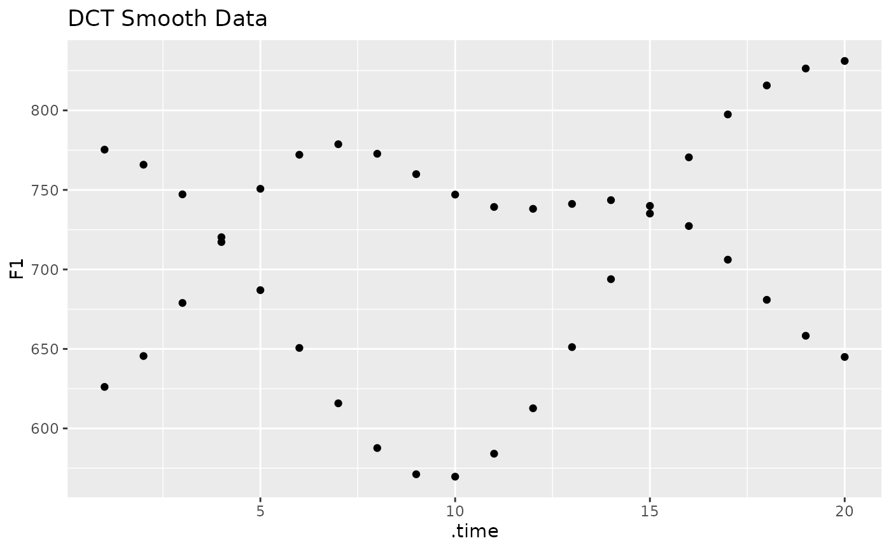

Reframe data columns using the Inverse Discrete Cosine Transform
Usage
reframe_with_idct(
.data,
...,
.token_id_col = NULL,
.by = NULL,
.param_col = NULL,
.n = 20,
.rate = FALSE,
.accel = FALSE
)Arguments
- .data
A data frame
- ...
<tidy-select>One or more unquoted expressions separated by commas. These should target the vowel formant.- .token_id_col
<tidy-select>The token ID column.- .by
<tidy-select>A grouping column.- .param_col
A column identifying the DCT parameter number
- .n
The size of the outcome of the IDCT
- .rate
Whether or not to include the rate of change of signal.
- .accel
Whether or not to include acceleration of signal.
Value
A data frame with the IDCT of the targeted columns along with an
additional .time column.
- .time
A column from 1 to
.nby token
Details
This will apply the Inverse Discrete Cosine Transform to the targeted columns. See idct.
Identifying tokens
The IDCT only works on a by-token basis, so there must be a column that
uniquely identifies (or, in combination with a .by grouping, uniquely
identifies) each individual token. This column should be passed to
.token_id_col.
Examples
library(tidynorm)
library(dplyr)
ggplot2_inst <- require(ggplot2)
speaker_small <- filter(
speaker_tracks,
id == 0
)
speaker_dct <- speaker_small |>
reframe_with_dct(
F1:F3,
.by = speaker,
.token_id_col = id,
.time_col = t,
.order = 5
)
speaker_idct <- speaker_dct |>
reframe_with_idct(
F1:F3,
.by = speaker,
.token_id_col = id,
.param_col = .param,
.n = 20
)
if (ggplot2_inst) {
speaker_small |>
mutate(
.by = c(speaker, id),
time_index = row_number()
) |>
ggplot(
aes(
time_index, F1
)
) +
geom_point() +
labs(
title = "Original Data"
)
}
if (ggplot2_inst) {
speaker_idct |>
ggplot(
aes(
.time, F1
)
) +
geom_point() +
labs(
title = "DCT Smooth Data"
)
}
